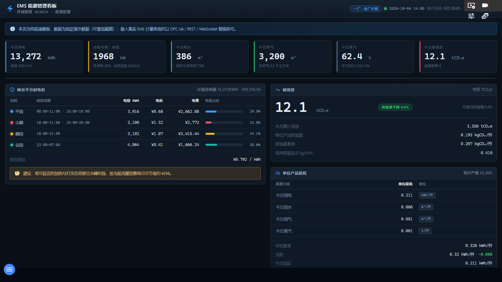

EMS 看板面向一厂 · 全厂计量场景，汇总电、水、气、汽四种能源介质与碳排放：6 张 KPI、24 小时能源用量趋势、峰谷平分时电价测算、单位产品能耗对标、碳排放统计和能源告警列表。与 MES 看板同样为纯前端演示看板，数据固定可复现；接入真实 EMS 计量系统时以 OPC UA / REST / WebSocket 替换。

图 8-1 EMS 能源管理看板（当前交付版实际截图）
| 区域 | 说明 |
|---|---|
| ① 顶栏 | 标题「EMS 能源管理看板」/ 副标题「开诚智枢 SCADIA · 能源管理」；徽章「一厂 · 全厂计量」；「统计区间： 今日 00:00 - 14:00」；右上角「演示数据」标签。 |
| ② 演示提示条 | 「本页为纯前端看板，数据为固定演示数据（可复现截图）；接入真实 EMS 计量系统时以 OPC UA / REST / WebSocket 替换即可。」 |
| ③ KPI 卡（6 张） | 今日用电（kWh，提示：峰段 3192 kWh）、当前负荷 / 峰值（kW，提示：负荷率、合同需量）、今日用水（m³，提示：循环水回用率 78%）、今日用气（提示：天然气 3.2 千立方米）、今日蒸汽（t，提示：平均压力 0.82 MPa）、今日碳排放（tCO₂e）。 |
| ④ 能源用量趋势 | 24 小时多序列趋势图（副标题「24 小时 · 各序列按自身峰值归一」），含峰段负荷/平段负荷参考线，横轴 00:00～23时。 |
| ⑤ 峰谷平分时电价 | 表格列：时段（尖峰/峰段/平段/谷段）、时段范围（如 尖峰 10:00-11:00 · 19:00-20:00，谷段 23:00-07:00）、电量 kWh、电价、电费、电量占比；汇总「计量总电量」「综合电价」，并给出节能建议（如「将可延迟的加热与打压负荷移出尖峰时段……每日可节省约 ¥268」）。 |
| ⑥ 单位产品能耗 | 按能源介质（电/水/气/汽）的单位能耗（kWh/件、m³/件、t/件等），对比「年初基准 / 当前 / 今日实际」与「年度目标」，附统计产量。 |
| ⑦ 碳排放 | 今日 tCO₂e、本月累计排放、单位产品碳强度（kgCO₂/件）、碳强度基准、电网排放因子（kg/kWh）、较基准下降幅度与月度目标降幅。 |
| ⑧ 能源告警 | 表格列：告警号、告警内容、能源介质、当前值 / 阈值、级别（严重/警告/提示）、时间。示例：「总进线需量 512 kW 超过合同需量 480 kW，已触发需量告警。」「循环水供水压力 0.041 MPa 低于下限 0.035 MPa，2# 泵已联锁启动。」等 8 条。 |